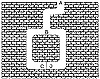

|
|
 |
 |
To access the contents, click the chapter and section titles.
Applied Cryptography, Second Edition: Protocols, Algorthms, and Source Code in C (cloth)
(Publisher: John Wiley & Sons, Inc.)
Author(s): Bruce Schneier
ISBN: 0471128457
Publication Date: 01/01/96
Chapter 5
Advanced Protocols
5.1 Zero-Knowledge Proofs
Here’s another story:
Alice: “I know the password to the Federal Reserve System computer, the ingredients in McDonald’s secret sauce, and the contents of Volume 4 of Knuth.”
Bob: “No, you don’t.”
Alice: “Yes, I do.”
Bob: “Do not!”
Alice: “Do too!”
Bob: “Prove it!”
Alice: “All right. I’ll tell you.” She whispers in Bob’s ear.
Bob: “That’s interesting. Now I know it, too. I’m going to tell The Washington Post.”
Alice: “Oops.”
Unfortunately, the usual way for Alice to prove something to Bob is for Alice to tell him. But then he knows it, too. Bob can then tell anyone else he wants to and Alice can do nothing about it. (In the literature, different characters are often used in these protocols. Peggy is usually cast as the prover and Victor is the verifier. These names appear in the upcoming examples, instead of Alice and Bob.)
Using one-way functions, Peggy could perform a zero-knowledge proof [626]. This protocol proves to Victor that Peggy does have a piece of information, but it does not give Victor any way to know what the information is.
These proofs take the form of interactive protocols. Victor asks Peggy a series of questions. If Peggy knows the secret, she can answer all the questions correctly. If she does not, she has some chance—50 percent in the following examples—of answering correctly. After 10 or so questions, Victor will be convinced that Peggy knows the secret. Yet none of the questions or answers gives Victor any information about Peggy’s information—only about her knowledge of it.
Basic Zero-Knowledge Protocol
Jean-Jacques Quisquater and Louis Guillou explain zero-knowledge with a story about a cave [1281]. The cave, illustrated in Figure 5.1, has a secret. Someone who knows the magic words can open the secret door between C and D. To everyone else, both passages lead to dead ends.
Peggy knows the secret of the cave. She wants to prove her knowledge to Victor, but she doesn’t want to reveal the magic words. Here’s how she convinces him:
- (1) Victor stands at point A.
- (2) Peggy walks all the way into the cave, either to point C or point D.
- (3) After Peggy has disappeared into the cave, Victor walks to point B.
- (4) Victor shouts to Peggy, asking her either to:
- (a) come out of the left passage or
- (b) come out of the right passage.
- (5) Peggy complies, using the magic words to open the secret door if she has to.
- (6) Peggy and Victor repeat steps (1) through (5) n times.
Assume that Victor has a camcorder and records everything he sees. He records Peggy disappearing into the cave, he records when he shouts out where he wants Peggy to come out from, and he records Peggy coming out. He records all n trials. If he showed this recording to Carol, would she believe that Peggy knew the magic words to open the door? No. What if Peggy and Victor had agreed beforehand what Victor would call out, and Peggy would make sure that she went into that path. Then she could come out where Victor asked her every time, without knowing the magic words. Or maybe they couldn’t do that. Peggy would go into one of the passages and Victor would call out a random request. If Victor guessed right, great; if he didn’t, they would edit that trial out of the camcorder recording. Either way, Victor can get a recording showing exactly the same sequence of events as in a real proof where Peggy knew the magic words.

Figure 5.1 The zero-knowledge cave.
This shows two things. One, it is impossible for Victor to convince a third party of the proof’s validity. And two, it proves that the protocol is zero-knowledge. In the case where Peggy did not know the magic words, Victor will obviously not learn anything from watching the recording. But since there is no way to distinguish a real recording from a faked recording, Victor cannot learn anything from the real proof—it must be zero knowledge.
The technique used in this protocol is called cut and choose, because of its similarity to the classic protocol for dividing anything fairly:
- (1) Alice cuts the thing in half.
- (2) Bob chooses one of the halves for himself.
- (3) Alice takes the remaining half.
It is in Alice’s best interest to divide fairly in step (1), because Bob will choose whichever half he wants in step (2). Michael Rabin was the first person to use the cut-and-choose technique in cryptography [1282]. The concepts of interactive protocol and zero-knowledge were formalized later [626,627].
The cut-and-choose protocol works because there is no way Peggy can repeatedly guess which side Victor will ask her to come out of. If Peggy doesn’t know the secret, she can only come out the way she came in. She has a 50 percent chance of guessing which side Victor will ask in each round (sometimes called an accreditation) of the protocol, so she has a 50 percent chance of fooling him. The chance of her fooling him in two rounds is 25 percent, and the chance of her fooling him all n times is 1 in 2n. After 16 rounds, Peggy has a 1 in 65,536 chance of fooling Victor. Victor can safely assume that if all 16 of Peggy’s proofs are valid, then she must know the secret words to open the door between points C and D. (The cave analogy isn’t perfect. Peggy can simply walk in one side and out the other; there’s no need for any cut-and-choose protocol. However, mathematical zero knowledge requires it.)
Assume that Peggy knows some information, and furthermore that the information is the solution to a hard problem. The basic zero-knowledge protocol consists of several rounds.
- (1) Peggy uses her information and a random number to transform the hard problem into another hard problem, one that is isomorphic to the original problem. She then uses her information and the random number to solve this new instance of the hard problem.
- (2) Peggy commits to the solution of the new instance, using a bit-commitment scheme.
- (3) Peggy reveals to Victor the new instance. Victor cannot use this new problem to get any information about the original instance or its solution.
- (4) Victor asks Peggy either to:
- (a) prove to him that the old and new instances are isomorphic (i.e., two different solutions to two related problems), or
- (b) open the solution she committed to in step (2) and prove that it is a solution to the new instance.
- (5) Peggy complies.
- (6) Peggy and Victor repeat steps (1) through (5) n times.
Remember the camcorder in the cave protocol? You can do the same thing here. Victor can make a transcript of the exchange between him and Peggy. He cannot use this transcript to convince Carol, because he can always collude with Peggy to build a simulator that fakes Peggy’s knowledge. This argument can be used to prove that the proof is zero-knowledge.
The mathematics behind this type of proof is complicated. The problems and the random transformation must be chosen carefully, so that Victor does not get any information about the solution to the original problem, even after many iterations of the protocol. Not all hard problems can be used for zero-knowledge proofs, but a lot of them can.
[an error occurred while processing this directive]
|


){kind=link}
){kind=link}